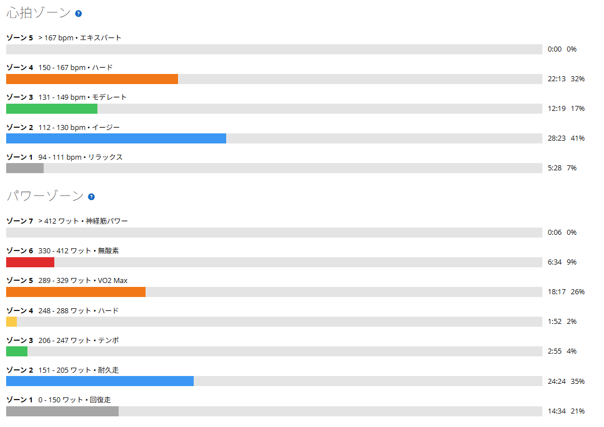
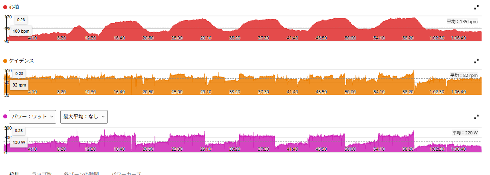

315W×5分×5本。4本目で心が折れかけたけど、ついに完遂
今日はローラーで5分走。目標はずっと狙っていた、315W前後×5分×5本、レスト5分である。
9月12日は4本を完遂。9月16日は5本に挑戦して、3本で気持ちが切れて終了。そこから少し間を置いて、今日は再挑戦した。

36.11km・NP255W・TSS98.2
- 全体36.11km / 1時間08分49秒 / 平均220W / NP255W / IF0.929 / TSS98.2 / 平均気温27.1℃
- 心拍・回転平均135bpm / 最大165bpm / 平均82rpm
- 効果有酸素TE4.0 / 無酸素TE0.0 / 運動負荷186
短時間だが、しっかり負荷の入った日になった。パワーはゾーン5以上に約25分。5本×5分が、ほぼそのまま高強度側に乗っている。
310W → 317W → 313W → 311W → 314W。5本完遂
- 1本目310W / 平均心拍146bpm
- 2本目317W / 平均心拍152bpm
- 3本目313W / 平均心拍154bpm
- 4本目311W / 平均心拍155bpm
- 5本目314W / 平均心拍159bpm
5本平均は約313W。狙いの315W前後から大きく外れず、5本完遂できた。パワーはほぼ横ばいで、平均心拍だけが146bpmから159bpmまで1本ごとに上がっていった。

数字は揃っている。でも4本目で本気で「もう無理かも」と思った
パワーだけ見ると、5本ともかなり綺麗に揃っている。ただ、体感はそんなに綺麗ではなかった。今日はかなりきつかった。
特に4本目。ここが一番厳しかった。「もう無理かもしれない」と本気で思った。でも、なんとか5分を最後まで維持。数字も311Wで、落ちてはいない。この4本目を乗り切れたのが、今日一番大きかったと思う。
5本目は「ここまで来たらやるしかない」で入った
4本目を終えた時点で、身体的にはかなりきつい。ただ、「ここまで来たなら、もう5本目もやるしかない」という気持ちになった。4本目を耐えたことで、逆に気持ちが切れなかった。
その勢いで5本目へ。結果は314W、平均心拍159bpm。今日の中で一番心拍も高くなり、全体の最大165bpmもこの5本目で出たが、最後まで完遂できた。
9月16日は気持ちが先に切れた。今日は切れなかった
9月16日の5分走では、316W・315W・317Wと3本目までは揃っていた。でも、脚や呼吸の限界ではなく、「今日はもう続ける気力がない」という理由で3本で終了した。あの日は身体ではなく、気持ちが先に切れた。
今日は逆だった。4本目で身体の方が先に音を上げかけたのに、気持ちは切れなかった。この違いは大きい。
9月12日は4本で「余裕」、今日は5本で「ギリギリ」
9月12日に4本を完遂したときは、4本目の最後に意図的に上げる余裕まであった。最大心拍は170bpm。今日は5本で、4本目で「もう無理かも」まで行った。最大心拍は165bpm。
きつかった今日の方が、最大心拍は低い。体感と心拍は、単純に比例するわけではなさそうだ。ここは今日一日では何とも言えないので、数字として残しておくだけにする。
だから、すぐ320Wには上げない
今日やってみて感じたのは、315W×5分×5本は、今の自分にとって絶妙な強度だということ。簡単ではない。むしろ完遂できるかギリギリ。でも、絶対に無理というわけでもない。4本目でかなりきつくなり、5本目は気持ちも使って押し切る。それくらいの負荷である。
なので、今日完遂できたからといって「じゃあ次は320W」とはしない。まだ315W×5本に余裕があるわけではない。むしろ今日はギリギリ。しばらくは同じメニューを続けて、4本目が少し楽になるか、5本目に入るときの心理的なハードルが下がるか、最後までパワーを揃えられるかを見ていく。
今日やってみて思ったこと
今日は単に5本完遂しただけではない。きつくなったところから、もう一段耐えられた。そこが良かった。
トレーニングは、毎回数字だけでは分からない。同じ313Wでも、余裕で出せた313Wと、ギリギリ耐えて出した313Wは、体感としては全然違う。今日は完全に後者だった。本当にきつかった。でも、完遂できた。今はまだこのメニューで十分。しばらく315W×5本を続ける。
次に見るポイント
- 5本とも315W今日は315Wに乗ったのが2本目だけ。5本とも315W以上に乗せられるか
- 再現性315W×5本を、次も完遂できるか
- 4本目4本目の苦しさが、少しずつ減っていくか
- 5本目5本目に入るとき、余力を残せているか
- 心拍1本ごとに上がっていく心拍の上がり方が、どう変わるか
- 重心のかけ方9月17日のSSTで試した重心のかけ方を、5分走の高強度でも維持できるか